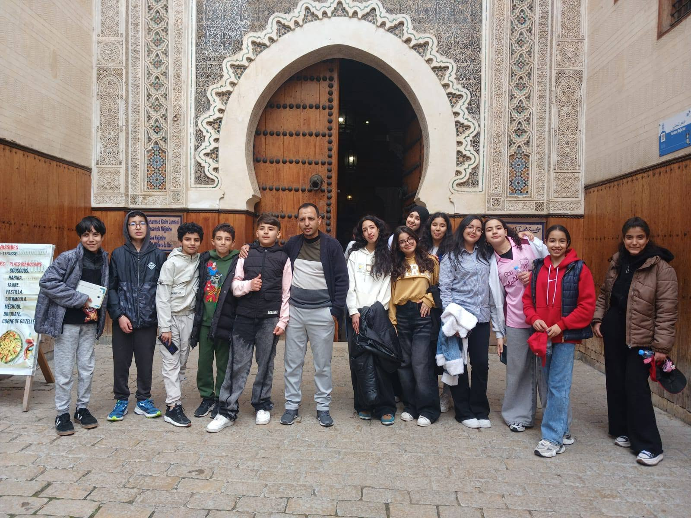
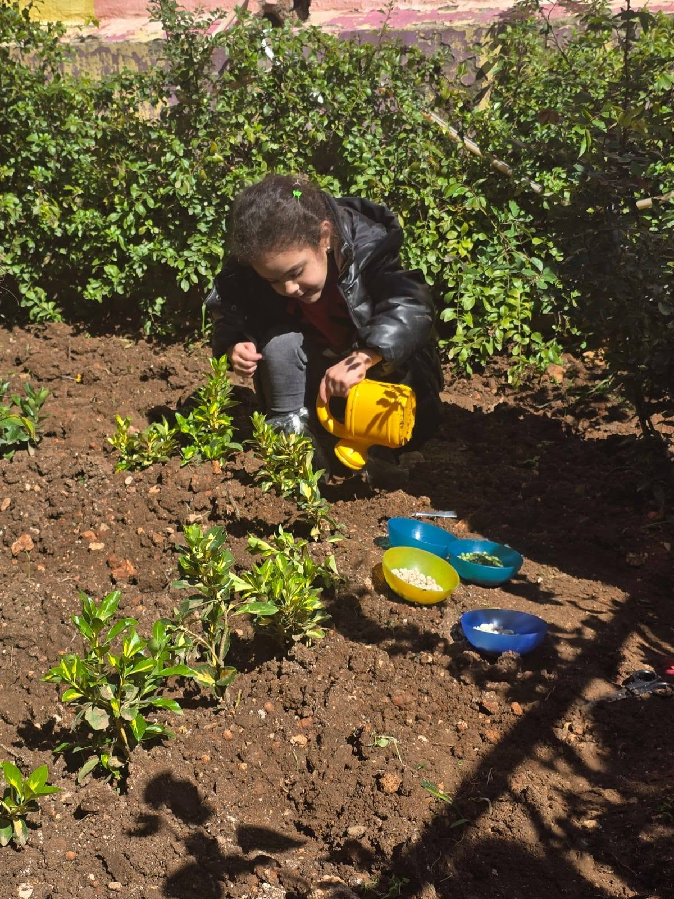

En images
La vie de Malaika, photo après photo
Cliquez sur une image pour l'ouvrir en grand. Utilisez les flèches du clavier pour naviguer.






Rien ne remplace une visite
Venez découvrir le campus, les salles et les espaces de jeu en compagnie d'un membre de l'équipe.